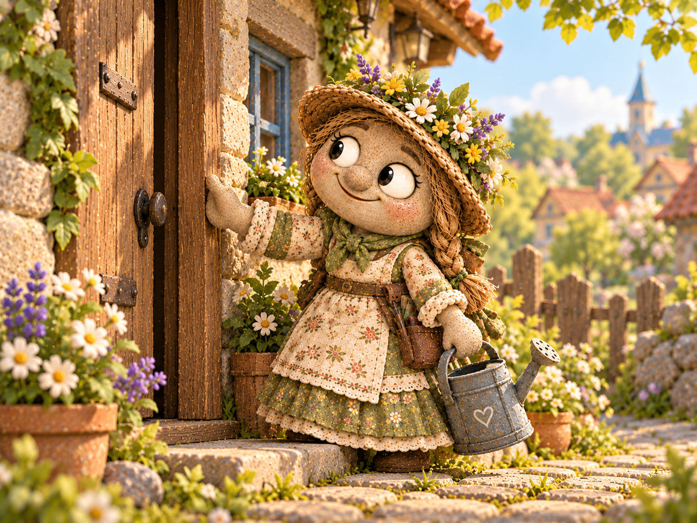
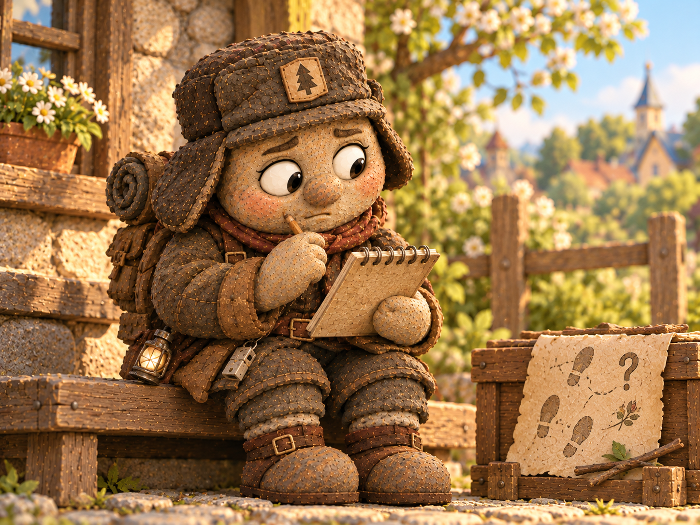
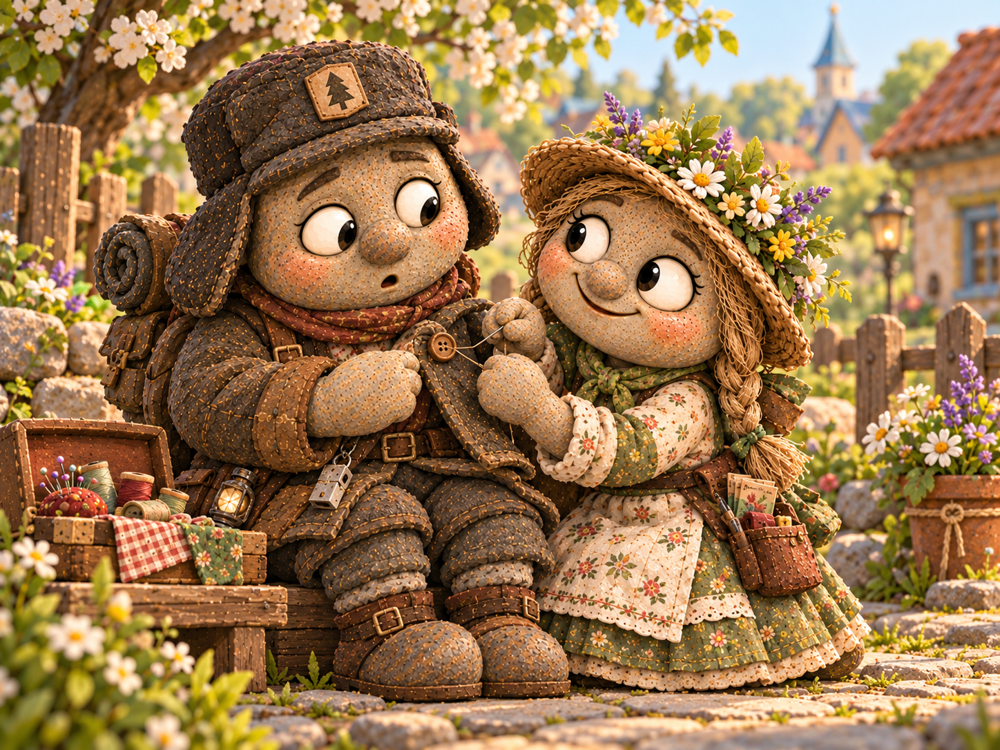

В Галькино говорили: если у кого-нибудь случится неприятность, Василиса Камушкина узнает об этом раньше, чем человек успеет пожаловаться. Она могла заметить покосившуюся изгородь за два двора, услышать скрип калитки через всю улицу и определить по одному виду ромашки, что той не хватает воды.
Вообще-то Василиса была садовником. Каждое утро она проверяла молодые деревца, рыхлила землю и заботливо обходила цветочные клумбы. Она знала, какие растения любят солнце, а какие лучше чувствуют себя в тени, и никогда не проходила мимо сломанной ветки. В её корзине среди семян и садовых инструментов всегда лежали верёвка, чистая тряпица и запасная пуговица. Не потому, что всё это требовалось в саду, а потому, что кому-нибудь непременно могло пригодиться.
Но существовала одна трудность: чужие заботы увлекали Василису гораздо сильнее собственных. Увидев, как Марфа несёт тяжёлую корзину, она бросала лейку и бежала помочь. Заметив у Прохора рассохшуюся подпорку возле мельницы, задерживалась там до обеда. А её собственные цветы терпеливо ждали, пока хозяйка закончит спасать деревню.
— И как ты всё успеваешь? — однажды спросил почтальон Тимофей Булыжников.
— Пока не всё, — честно призналась Василиса, поглядывая на неполитую клумбу. — Вот если бы я была доброй феей, взмахнула бы палочкой — и всем сразу стало хорошо.
О том, чтобы стать доброй феей, она мечтала всерьёз. Ей нравилась мысль, что можно незаметно исправлять маленькие беды. Правда, пока вместо волшебной палочки у неё была обыкновенная лейка, и действовать приходилось собственными руками.
✦ ✦ ✦
Всё началось одним солнечным утром. Василиса пропалывала грядку у забора и увидела, как Лука Щебёнкин вышел из дома с корзинкой. Он направился к огороду за помидорами, оставив входную дверь чуть приоткрытой.
Лука служил деревенским сторожем. Он мог десять раз проверить замок на складе, прежде чем спокойно отправиться спать, и всегда замечал, если что-то лежало не на своём месте. Но в то утро он намеренно оставил дверь открытой: дом проветривался, пока хозяин собирал овощи.
Василиса этого не знала. Она увидела колышущуюся на сквозняке занавеску и встревожилась. Вдруг ветер захлопнет дверь так сильно, что разобьётся стекло? Или налетит дождь, пока Лука занят на грядке?
— Надо помочь, — решила она.
Василиса подошла к крыльцу, осторожно притворила дверь и убедилась, что та больше не хлопает. Затем вернулась к саду с приятным чувством выполненного доброго дела.

Через несколько минут Лука появился с корзиной красных помидоров. Он остановился перед порогом: дверь была закрыта. Он отлично помнил, что оставлял её приоткрытой.
Лука проверил, всё ли на месте в доме, осмотрел замок и не нашёл ничего подозрительного. Но вопрос не давал ему покоя: кто подходил к его крыльцу, пока он был в огороде?
В тот же день он рассказал об этом Тимофею.
— Может, кто-то решил тебе помочь? — предположил почтальон.
— Помочь с чем? — нахмурился Лука. — Я ведь специально оставил дверь открытой!
Тимофей пожал плечами. Загадка показалась ему не слишком серьёзной, но для Луки чужое вмешательство в хорошо известный порядок было настоящим происшествием.
✦ ✦ ✦
Через два дня странностей прибавилось. Прохор Мельников обнаружил, что кто-то подвязал молодую яблоню возле мельницы: после сильного ветра деревце накренилось, а теперь стояло ровно. Дарья Копейкина нашла ящики с семенами, оставленные у лавки под навесом: их аккуратно отодвинули от края, куда ночью заливало дождём.
Поступки были явно добрыми, но никто не видел помощника. Прохор хотел поблагодарить его, Дарья — узнать, не перепутаны ли коробки, а Лука — выяснить, почему этот таинственный человек всё делает без предупреждения.
К концу недели сторож завёл в блокноте новую страницу и написал крупными буквами: «ДЕЛО О НЕВИДИМОМ ПОМОЩНИКЕ». Под заголовком он перечислил три случая: закрытая дверь, яблоня у мельницы и спасённые от дождя семена.

Анфиса Миронова, заглянувшая по дороге из школы, внимательно прочитала записи.
— У тебя есть одна важная зацепка, — заметила учительница. — Все эти дела требуют не волшебства, а внимательных глаз и умелых рук. И совершены они рано утром, когда улицы ещё пусты.
— Значит, завтра я выйду пораньше, — решил Лука.
На рассвете он устроился на скамейке напротив лавки, откуда были видны и дорога к мельнице, и поворот к своему дому. Утро выдалось прохладным. Лука накинул куртку, но забыл застегнуть верхнюю пуговицу, которая давно держалась на одной нитке.
Когда над крышами показалось солнце, по дороге появилась Василиса. В корзине у неё лежали садовые ножницы, бечёвка и пакетики с семенами. Она направлялась к своему саду, но возле лавки остановилась: ветром сорвало одну завязку с полотняного навеса. Василиса поставила лейку, привязала ткань к стойке и довольно оглядела работу.
Лука поднялся со скамейки.
— Вот ты где! — воскликнул он.
— Доброе утро, Лука! — обрадовалась Василиса. — Почему ты сидишь на холоде? У тебя куртка расстёгнута. Подожди, я помогу с пуговицей.
Она уже потянулась к своей корзине, но Лука поднял ладонь.
— Сначала ответь: ты подвязала яблоню Прохора?
— Конечно. Её корни ещё слабые, — удивилась Василиса.
— И убрала ящики Дарьи?
— Да. Перед дождём. Неужели их всё-таки намочило?
— Нет, с ними всё хорошо. А мою дверь тоже ты закрыла?
Василиса улыбнулась, но, увидев серьёзное лицо сторожа, перестала улыбаться.
— Я. Думала, её оставили случайно. Она хлопала от ветра.
— Я проветривал дом, — объяснил Лука. — А потом полдня вспоминал, не забыл ли чего-нибудь. Если бы ты спросила, мы бы оба сберегли себе немало хлопот.
Василиса опустила глаза на корзину. Ей и в голову не приходило, что доброе дело может обернуться для кого-то тревогой.
— Прости, Лука. Я хотела помочь. Мне всегда кажется: если я вижу неприятность, нужно исправить её немедленно.
— Иногда так и надо, — ответил сторож. — Но не всякая открытая дверь — беда. А когда сомневаешься, можно сначала спросить.
Василиса задумалась. Волшебная палочка, о которой она мечтала, вдруг показалась ей не такой уж важной. Настоящей доброй фее, наверное, нужно не только замечать чужие трудности, но и понимать, что человеку действительно требуется.
— Значит, я ещё учусь быть феей, — сказала она.
— Как и все мы, — согласился Лука. — А вот с моей пуговицей ты можешь помочь. Я сам прошу.
Василиса рассмеялась, достала нитку и иголку и через несколько минут прочно пришила пуговицу. На этот раз помощь оказалась и нужной, и своевременной.

✦ ✦ ✦
После разговора Василиса наконец добралась до собственного сада. У самой калитки поникли цветы, которые она третий день собиралась полить. Она наполнила лейку, но из-за забора донёсся знакомый голос:
— Василиса, тебе помочь?
За калиткой стоял Лука с пустым ведром. По пути домой он заметил, что её клумбы совсем пересохли.
Василиса растерялась. Обычно этот вопрос задавала она сама.
— Да, — ответила она после паузы. — Если тебе не трудно, принеси, пожалуйста, воды из колодца.
Вдвоём они управились быстро. А вечером Василиса впервые за долгое время сидела у собственного цветника и никуда не спешила. Ей было приятно думать, что забота может идти в обе стороны.
Она не перестала замечать чужие беды. На следующий день помогла Марфе донести корзину, подсказала Егору Тихонову, как укрепить размытый берег возле его любимого места для рыбалки, и подобрала выпавший из сумки Тимофея конверт. Просто теперь иногда успевала спросить: «Помочь?» — прежде чем браться за дело.
А Лука повесил на дверь небольшую табличку: «ПРОВЕТРИВАЮ. ПОЖАЛУЙСТА, НЕ ЗАКРЫВАТЬ». Василиса прочитала её, кивнула и прошла мимо. Правда, заметив, что табличка висит криво, всё-таки остановилась.
Подумала.
И постучала в дверь.
В Почтовом архиве Галькино дело о невидимом помощнике закрыли с записью:
«Подозреваемая — Василиса Камушкина, садовник. Злого умысла не обнаружено. Добрых намерений — с избытком. Рекомендуется благодарить и при необходимости просить сначала постучать».